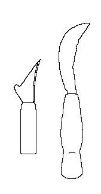
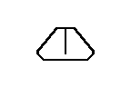
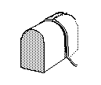
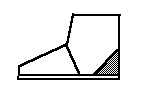

Glossary of Footwear Terminology, C
Calc
(Latin: Calciamenta)
An Anglo Saxon term for a type of sandal.Calceologist
Someone who makes a study of footwear, especially historical footwear.
Calceology
Although this is not at this time a formally recognized field of research,
Calceology informally refers to the study of footwear, especially historical
footwear, whether as archaeology, shoe fashion history, or anywhere else. A
person who makes such a study can be considered a Calceologist.Caligae
In the Middle Ages this referred to a type of clerical footwear. Historically
the name derived from the Roman Caligae, the boots worn by 1st
century Roman soldiers.
Caligarum
(also Caligis)
ShoesCalopedes
A Latin term for wooden soled shoes. See Pattens. Also, this may refer
to a sort of Anglo Saxon era clerical footwear, possibly because they had wooden
soles.
Cap, Toe Cap
An outside toe reinforcement. It may be straight, peaked or winged.
Carving knife
(Other Medieval spellings include: Carwyng Knyfe, Paring knife)
It is likely that this is the knife used to trim the inseam while the shoe is
still on the last, as well as to trim away excess leather, particularly in
places where the trenket would be difficult to handle or manage.
Holme shows a pairing knife as:  the hook in the back is for
scratching out a pattern before actually committing the blade to cutting the leather,
which makes it related to the Trenket
the hook in the back is for
scratching out a pattern before actually committing the blade to cutting the leather,
which makes it related to the Trenket



Cast
This isn�t really a
term, as much as it�s an attempt to show the link between two other terms. In
sewing or stitching with a
shoemaker's
stitch, this refers to finishing the stitch by passing the
bristles or needles though through the loops on one or both sides of a seam,
making an half-hitch knot inside the leather. This is usually only done on the
final stitch in a row to secure the end of the seam. See Half Cast Stitch.
Full Cast StitchCastor
An English term for a component of a boot or show (i.e. front, vamp, etc) that is cut
oversized and subsequently trimmed down to size during the lasting or shaping [Frank Jones
of Lancashire, via the Crispin Colliquy]. See Blocker
Center Seam (Centre Front Seam)
- A type of shoe made to wrap around the foot with a single seam running up the center of
the vamp.

- The seam at the center front of a shoe. It may extend from the imprint line at the toe,
or below it, to the topline, or to the apron. [Webber, 1989]
Centre seam over vamp
A real or decorative seam running from the toe to instep of the vamp, found mostly on
footwear made in the period A.D. 700 - 1200. [Goubitz, 2001]
Cere
To smear or cover thread
with wax. I must say that this may not have been a shoemaking term, but I
believe the use is correct.
- v.t. [L cera, wax] [Johnson 1755][Websters 1828][OED 2d Ed.]
- trans. To smear or cover with wax, to wax.
1489 Caxton Sonnes of Aimon vii, 173 "Mawgys ... take a threde of sylke and
cered it well."
Chamber-Master
From 1851 or earlier. A shoemaker who works at home, as opposed to an established shop
[OED 2d Ed.].Channel
- A shallow, usually slanting, niche, cut, slit or groove made around the edge of an
outsole or insole to receive a row of stitching and to keep the thread below the surface
the leather. A channel is only found on European influenced footwear. Slanting channels
are only found in 17th century and later shoes (mostly women's at first, then men's, by
about 1800). [Thornton/Swann, 1983][Webber, 1989][Devlin, 1840]. "Channel of the
sole" [Holme, 1688]
- A cut in the leather which allows stitches to be set below the surface of the leather.
Inside channel the cut or notch in the insole on the interior side of the holdfast.
[Frommer]
- A groove around the border of the treadsole (outsole) into which the sole-construction
stitches are sewn, thus concealing and protecting the stitches from wear. [Goubitz, 2001]
Channel of the sole
See Channel [Holme, 1688]
Channeling
"Channeling the sole, making a riggett in the outersole for the wax thread to be
lain" [Holme, 1688]. Cutting or incising the channel in the outsole.
"Riggett" is a variation of Riggot, a groove or channel.
Channeling the sole
See Channeling [Holme, 1688]
Chape
The parts of a detachable buckle that are hinged on the spindle; the spiked tongue plus
the attachment device. [Goubitz, 2001]
Chase (see also Full Chase boot and Demi Chase Boot)
A 17th century term for types of boots. The term likely derives from
Chauces.Chaspy
See Chaucepe [Lystyne lordys verament]
Chaucer
(Other medieval spellings include: Chauceor, Chaude-pis,
Chaude-pisse, Chau-pis, Chau-pisse, Chauser,
Chausses, Chausure)
Leggings or hose of leather or maille. They are possibly related to
hueses.Chaucepey
(Other medieval spellings include:
Chaspey, Chaspy, Chaunce P�, Chaucepe, Latin: Subtaleris, Parkipollex,
Parcopollex)
Modern French, "Chausse-Pied".
This term is usually glossed as 'shoe horn' (see Shoeing horn), and
by the 18th century, it clearly referred to a strip of hair-on calf skin that
was used to help pull on a shoe. I will note that subtaleris also refers to a
type of shoe. [Saguto; Lystyne lordys
verament]
Chaunce P�
See Chaucepe [Promptorium Parvalorum]Cheesey
A description of leather that is firm and good for use, as opposed to leather which is
knotty and blotchy and hard to work with evenly. [Devlin, 1840]
Cheverel
(Other medieval spelling includes: Cheuerel)
Kid or goat skin leather, known for its stretchiness.Chopines
(Other medieval spelling includes:
Shopines)
High, cork soled shoes in the 16th century. These developed into
the pantofle. The really exaggerated styles were not seen in England.
Chopped stitches
Mostly after 1900, stitches on the outsole that are rolled with various wheels
["bunking wheels" and "janking wheels"] to give something of a fancy
imprinted design or finished look to it all on the bottom. This is similar to the use of a
"fudge wheeling" up on the top of the welt, which started in imitation of the
old "pricked" hand-stitching, "pricked" with a
"stitch-prick". But "fudging" the top of the welt became a cheat after
the turn of the century. A faint channel was cut into the top of the welt by dragging a
sewing awl round the forepart to slit it. The outsole was then machine-stitched, say at 5
to the inch, then the welt channel was rubbed closed, smothered with wax and
"fudged" with a "fudge wheel" that made a series of dents, maybe 13,
18, etc. per inch to give the welt the appearance of having been stitched finer than it
really was. The stitches on the bottom of course were routinely hidden in a channel too,
so the poor customer thought he was getting something rather fine. [Saguto]
Clams
A wooden clamp held between the knees to hold the shoemaker's work. [Devlin, 1840]
Cleaning brush
A coarse brush for removing dirt, made of pig bristles, the tail-hair of cattle or horses,
or agave fibers. [Vass]Clicking
(also to Click. Modern and traditional terms include: Trenching,
Cutting Out)
Clicking is a post-Medieval term referring to cutting pattern pieces for
overleather (uppers) and boot tops out of leather.
- Clicking is a term originated in the 17th Century for cutting pattern
pieces for uppers and boot tops out of leather (from the French Claquier). This is
sometimes done with a Clicking knife.. [Devlin, 1840][Saguto]
- Cutting out of cowboy boot patterns. The cut out man is the clicker, the knife is the
clicker knife [Frommer]
- Cutting out the upper components from the appropriate leather in accordance with the
style forms. [Vass]
Clog (Clogge)
- "A countryman's shoe". Wooden soled shoe, or more specifically a wooden sole
with a leather upper nailed to it. A wooden or wooden-soled shoe, boot or overshoe.
17th-18th century clog overshoes had only a wedge of wood. [Thornton/Swann, 1983]
- In the Middle Ages, this referred to a type of overshoe with a wooden sole held on by
straps. See also Pattens.
- In the 18th century and later, this referred to a woman's overshoe made from leather or
cloth with a covered-cork block built up to support the waist of the shoe worn inside
[Saguto]
- A wooden shoe.
Closing
(also to Close, Edge closing Modern terms include:
Butted Seam)
This term has both a narrower and a broader meaning. The first is edge closing
or bringing pieces of leather together, generally butted edge to edge, and
joining them by a tightly yerked seam (either flat or round), leaving no
grinning or opening between the pieces. In medieval footwear, the predominant
closing was what is now frequently referred to in the archaeological jargon as
an edge-flesh seam, but in shoe making parlance is a round closing (or sewn with
a split hold) on the inside. Other examples of the term in use are �The two
quarters are closed at the back seam�, or �the boot tongue is closed to the
leg,� and so forth). More broadly, closing may also include everything sewn or
stitched to make the finished overleather, including bindings, whipped linings,
cordings, even decorative stitching.
- Any sewn join between two major component parts of the upper (i.e., the vamp
"closed" to the quarters by a side seam, the two quarters are "closed"
at the back seam, or the boot tongue is "closed" to the leg, etc).
- More broadly, "closing" a shoe or boot may also include everything sewn or
stitched to make the finished upper, including little fiddly bits like bindings, whipped
linings, cordings, mock-seams [AKA "tunnel stitching" in uppers], etc.
- v. To sew or stitch a seam closed. Term is used since at least 1801 (W. Huntington, Bank
of Faith)[OED 2d Ed.]
- v. Specifically "closing" sections of the upper [Thornton/Swann, 1983].
- v. Closing the Heel Quarters and Vamp [Holme, 1688]
- v. Sewing together the uppers. [Devlin, 1840][Martin, 1745]
- Edge Closing. Sewn butted seams where the thread only shows on the one side of the
leather. [Saguto]
- v. Sewing together the upper leathers with either a Flat Seam or
a Round Seam. [Rees, 1813]
- Sewing the upper components together with single or double rows of stitches, depending
on the strain to which the components will be exposed. [Vass]
Clos'd
A contraction for "closed". [Martin, 1745]
Closed (or Close) Seam
- see Stabbed Seam
- Two pieces of leather stitched together face to face along the edge and then folded
fiat. [Goubitz, 2001]
Closed Tab
an upper pattern where the eyelet tabs are stitched down to the vamp edge.
[Thornton/Swann, 1983] It is fairly modern, appearing mostly on things like
"Oxfords"Closer
The person who makes the uppers for the Maker [Devlin, 1840].
Closer's Boy
A boy, usually an apprentice, who closes the uppers for the Maker.
[Devlin, 1840]Closing
See Close
Closing Block
(Traditional terms include: Sewing Block, Seam Block)
A long block of wood, slightly "U" shaped in cross section, which can be rested
on the thigh (the opening of the "U" on the bottom of the bock), under the
stirrup, to hold the overleather securely in place during the closing. There is
no direct evidence that it was used in medieval shoemaking, although the
indirect evidence of the stirrup is suggestive. The use of this technology
is seen in c1568 Jost Amman engraving
After
Salaman. See also Picture under Stirrup
Closing the Heel Quarters and Vamp
See Close
Closing seam
For pre-16th century footwear, the final seam on the upper to be sewn, completing the
upper and making it ready to be sewn to the sole. [Goubitz, 2001]
Closing shop
The workshop where the upper components were traditionally reinforced and stitched
together. Today uppers are made industrially and supplied to the shoemaker. [Vass]
Closure
The opening/closing arrangement or system allowing the shoe to open in order to put the
foot in and close after it is in. [Goubitz, 2001]
Clout
(Other medieval spellings include: Clowt, Clowtys Latin: Lampedium,
Limpedium, Renovandopictacia, Pictacium, Pictasium. Modern
and traditional terms include: Clump, Clump sole)
Leather repair patches (pacch, or scrutum) on shoes. In the Middle Ages these
were usually stitched on; later they were pegged on, and nailed on. A number of
medieval outer soles have been described in the archaeological literature as
�clump soles� although this is a 19th century term
- From the Old English Clut "a rag, tatter or shred used as a patch or for
repairs" Used for leather pieces (i.e. Lederclout, clout leder) from at least
c.1300. Used for shoes from at least 1450 [OED, MED]
- See Cobbler. Thomas Wright, in his commentary on John of Garland, Dictionarius,
refers to Pictacia and Tacons.
- To nail (i.e. hobnailed or nailed repairs).
Clout Leather
Sole/Heel repair leather.Clump (Clump sole) See Clout
- See Repair Sole. The word may derive from the early Dutch
or North German word "Klamp" or "Klumpe", or wooden shoe.
- A repair sole made of one or more layers, tunnelstitched on; the term applies to both
the fore and rear repair soles or patches. [Goubitz, 2001]
Coad
See CodeCobbler
(Other medieval spellings include: Botcher, Clouter, Clowtars, Clowter,
Cobbeler, Cobblar, Cobeler, Cobelere, Cobler, Cobulare, Cobyller, Specker,
Latin: Pictaciarii, Savetiers, Rebroccator)
A mender of shoes, or someone who might make translated shoes from old leather.
This trade has been traditionally separate from shoemaking, and is frequently
less prestigious. See also Cordwainer, Shoemaker and Soutor.
- A "Mender of Shoes" (Word used c1400-). By some regulations, they must use
"old" leather to keep them from making new shoes.
- A person who repairs shoes and makes shoes from recycled leather: a separate trade and
guild from the shoemaker. [Goubitz, 2001]
Cobbler's hammer
Weighing some 18 ounces (500 g), the cobbler's hammer is similar to a household hammer,
and has many uses. [Vass]Code
(Other medieval spellings include: Coode, Cud, Cude, Sowters Wax. Latin:
Cerisina, Coresina. Modern and traditional terms include: Coad,
Hand, Handwax, Shoemakers Wax).
A wax-like or taffy-like substance that shoemakers cere their threads with.
Post-medieval wax is understood to have been made from a mixture of pitch,
rosin, and some oil, and generally has no natural wax in it, although some
recipes do allow for some beeswax.
- sb. Obs. Also Coode. Pitch, cobbler's wax.
1358 Ord. in Riley London Mem (1868) Code, rosin,, or other manner of refuse.
c1440 Wycliffe Ex. ii 3 (MS. Bodl. 277) She took a segge leep, and clemede it
with coode
[1382 glewishe cley 1388 tar]
c1440 Promp. Parv. 85 Code, Sowters wex [H.P. coode]
c.1485 Digby Myst. (1882) ii, 103 Be-paynted with sowter's code.[OED 2d Ed.]
- Thread wax. See Handwax and Shoemakers Wax.
Coker
(Other medieval spellings include: Cokyr, Cocur, Cuker, Quequer, Latin:
Cocurus, Coturnus, Ocrea)
This term refers to a short laced boot, or a laced legging worn by farmers,
hunters, fishermen to protect the legs. Other authors want to refer to revelins
as cokers.
Collar
- A thin, rolled strip of leather serving to reinforce and decorate the upper areas of the
quarters. [Vass]
- A Band of leather or other material, usually sewn to the topline of the shoe
(specifically some forms of Moccasin), which is folded over and hanging down. It can be
functional or decorative, and may have laces to tie. A collar differs from a cuff in that
it hangs down. [Webber, 1989]
- A piece of leather sewn to the opening of a shoe or boot and mostly worn turned down on
the exterior of the shoe. [Goubitz, 2001]
Coloring the sole
(See Inking) [Holme, 1688][Devlin, 1840]Comb Last
A specific sort of last with a flattened instep, designed to be used with
shovers, instep leathers, and wedges. The term is not medieval, and there is
some disagreement whether medieval lasts were comb lasts or not. See Last, Comb.
Combination Hold
Where one "hold" is one thing and the other "hold" is another in the
same seam. "split and lift" "whip-stitch, sewn linings". [Saguto]
Combination Lasting
The rear of the shoe is board lasted; the front of the shoe is slip lasted. The result is
a stable heel area and a flexible forefoot. [www.eastbay.com/help/glossary]
Combination Tannage
Any combination of
processes, for instance brain tanning is a form of oil dressing, combined with
the partial aldehyde tannage from smoke tannage. Currying, on the other hand
combines both the tanning process with the oxidization process in oil dressing.Combined fastening
A shoe fastening consisting of more than one method, e.g. a combination of lace and buckle
or toggle and lace. [Goubitz, 2001]
Cone
The part of the last which corresponds to the instep of the foot.Construction
The shoemaking term for the method by which upper and bottom are joined together (See
Nailed, Turnshoe, Welted). [Thornton/Swann, 1983][Webber, 1989] [Goubitz, 2001]
Continental size
(Paris point) A shoe sizing method, the size increments originally determined by the
length of the stitch used for stitching the welt, being three stitches over two
centimetres. [Goubitz, 2001]
Continuous Lacing
Lacing with a single long lace, as opposed to several latchets, toggles, or short laces.
Continuous Sole
on early heeled shoes the sole may be continuous under the forepart, waist, down the
breast and under the heel, the latter later replaced by a separate top piece (q.v.).
[Thornton/Swann, 1983]
Coperas water
(Iron Black)
These are actually two different, but very similar things. Coperas water is
made from iron sulfate and water or vinegar, while iron black is made from iron
filings and water and vinegar. These solutions when applied to tanned leather,
reacts with the tannins and turns that leather a dark gray or black. This is
the same basic mixture as used for medieval ink. This sort of blacking appears
to have been used as early as the Roman period.
- A solution of iron sulfate, which, when used on tanned leather, turns it black. [Martin,
1745]. This may be the liquid made from iron filings and vinegar referred to by some
as "Iron Black".
- Copperas, aka vitriola [c1440], coperose [c1440], fraganti [c1450], coperas [c1450],
vitriol [c1450] chalcanthum [c1565]. green copperas, green vitriol, Iron Sulphate (FeSO4).
Cord
(also Cording. Modern terms include: Binding Cord,
Reinforcement Cord, Strengthening cord)
A technique of binding a length of cord by whipping a second cord around it,
to strengthen and reinforce an area of a shoe, and to keep it from stretching
(for example, around the unfinished edges). These were used from the 13th
century up to the 18th century. In the early 1600s, narrow tape was used as
well. I can not prove that this is what this technique was called at the time,
however the term Corder for someone who did this is known from the 15th
century.Corder
- Someone who makes or fastens cord to a shoe. Term is used from c.1430 on [OED 2d Ed.]
- Someone who forms a cord, welt, or braid on a shoe. Term is used from 1885 on [OED 2d
Ed.].
Cording
A way of strengthening an area of leather by whip-stitching on it a thick thread
(cord) or having a cord sewn by tunnelling it in and out through the thickness of the
leather. [Goubitz, 2001]
Cordovan
- See Cordwain.
- By the middle 18th century, this term refers to equine leather.
- Horsehide tanned with chrome salts. It is used for shoe uppers and boot legs. [Vass]
Cordwain
(Other medieval spellings include: Cordoban, Cordovan, Cordewan, Corwale,
Spanish Leather Latin: Aluta)
Cordwain leather was traditionally a particularly rich red-dyed tawed leather
from the Mouflon sheep or goat, from Cordoba in Spain. It was eventually used to
refer to goatskin, and later it was made from dyed, vegetable tanned bovine
hide. By the middle 18th century, this term refers to equine leather. [Grew/deNeergaard, 1988] The term "cordovan" first appears in
English before 1625 [OED 2d Ed.]. Thomas Wright, in his commentary on John of Garland, Dictionarius,
may be referring to this when he uses the term Alluta.Cordwainer (Other
medieval spellings include: Corden Cordevaner, Cordewan, Cordewanarius,
Cordewaner, Cordiner, Cordner, Cordoan, Cordoanier, Cordon, Cordonnier, Cordouan,
Cordouanier, Cordovaniere, Corduan, Corduennier, Cordwain, Cordwar, Cordwayner,
Cordwent, Cordyware, Corveisier, Corvesarius, Corveser, Corvesters, Corviser,
Corvisor, Courvoisier, Kordewanier, Kurdiw�ner Latin: Allutarii,
Alutarius, Sutor)
A shoemaker, specifically someone who works in cordwain leather. The term is
generally obsolete today, except among historical shoemakers, or as part of the
name of the trade organization or company of shoemakers. It is also sometimes
used today to include all branches of the trade. See also Shoemaker,
Soutor, and Cobelere. Cordwainery and Cordwaining both refer to the
art of the craft of the Cordwainer
Cordwainery
- The art of craft of the Cordwainer (from at least 1831) [OED 2d Ed.].
- The region of London south of St. Mary-Le-Bow where the Cordwainers worked. 13th
Century. Also Corveiseria. [Canterbury Register K p.1]
Cordwaining
The art of craft of the Cordwainer [Martin, 1745][OED 2d Ed.].
Counter (Outside Counter/Inside Counter/Heel Stiffener/Foxing/Heel
Spur/Counter Cover)
- From the French "Contre-forte", an outside stiffening layer at the back
[Garsault, 1767][Saguto]. (Note, modern French archaeologists also refer to interior
stiffening layers as "contreforts"). A piece of leather or other material used
as a stiffener or internal reinforcement to the quarters (or the heel area). It is most
often sewn inside the shoe. In medieval shoes this is by means of a whipstitch, leaving a
scalloped effect on the leather, which is generally invisible from the outside. Later,
after the introduction of fully lined leather uppers (c.1750-90), these were inserted
between the lining and outer material of the upper. Even later they were stitched to the
outside of the quarters. [Thornton/Swann, 1983] Counters are only found in European
influenced footwear. [Webber, 1989]
- Some references seem to use this term to refer to any internal reinforcement. A
separate component over the back part of the quarters but should be restricted to an
outside counter. [Thornton/Swann, 1983]
- Outside Counter. A piece of leather stitched to the outside of the Counter.
- Foxing.[Saguto]
- Stiffener (or Heel Stiffener). A reinforcement placed inside the back of
the quarters. In early shoes the top edge is often stitched to the quarters by a type of
hemstitch (or overseam or whipped seam) which produces a scalloped effect along this edge;
the bottom edge is lasted in with the upper. [Thornton/Swann, 1983]
- Heel Stiffener. A type of Counter, this generally triangular piece of leather is
stitched to the inside of the quarters to stiffen and strengthen the heel. In early shoes
the top edge is often stitched to the quarters by a type of hemstitch (or overseam or
whipped seam) which produces a scalloped effect along this edge; the bottom edge is lasted
in with the upper. [Grew/deNeergaard, 1988]

- Heel Spur. A term for an outside counter [Foxfire 6]
- Counter Cover. A Western Bootmaker term for the outermost layer at the back of a
4-piece cowboy boot.
- The stiffener at the back of the cowboy boot which cups the heel of the foot. Usually
covered with a counter cover. [Frommer]
- (Back Stiffener)
A leather reinforcement inside the shoe at the point where
the quarters meet. [Vass]
- Heel stiffener
A reinforcement inside the back of the quarters. [Goubitz, 2001]
Couped
(Other medieval terms include: Decouped, Icouped, . Modern and
traditional terms include: Gimped, Pinked, Cut
Out, Fenestrated, Openwork decoration)
Leather that has been decorated with slashed, cut outs, punched holes, or
scalloped edges.Corked shoes
Shoes made with any sort of cork sole.
Cork-filled sole
The sole of a mule or leather patten containing a thick layer of cork between the
insole and treadsole (outsole). [Goubitz, 2001]
Counter Cover
See Counter.
Cowhide
The raw material for shoe manufacture. The strongest and most massive part of the hide is
located on either side of the spinal column. the neck section is used for the insole and
middle sole, the belly for the welt, heel cup, and vamp. Vegetable-tanned leather is
suitable for the lining and the lower parts of the shoe, chemical tanned leather for the
upper (see also bend leather}. [Vass]Cow Tongued Stake
A blacksmithing term for a Cobbler's or Repair Last [This may be
an Oklahoma regionalism].
Cramp (Crimp)
A piece of wood carved having an area corresponding to the upper part of the instep on
which the Upper leather is stretched. The term dates from at least 1864 [OED 2d Ed.] (See Crimping)
Crakowe
(Crakow, Cracowes, Krakau, Krakow, Poulaine)
A 14th century shoe with a long pointed toe, peak or pike.
Cran
A bookmaker's secret or secret resource. [Frommer]
Crease
The line in the Welt where the the leather folds up from the stitches to
where it folds back into the Inseam. [Devlin, 1840]
Crimp Screw
A screw used on a crimping board.
Crimping
- Bending the front or vamp of a boot into a right angle. An Americanism for the British
"Cramp", synonymous with Blocking [Saguto].
- The compression of material into pleats or folds.
- Blocking--stretching a flat piece of leather into a folded L shape prior to making the
boot. Requires a crimping board and a crimping screw or iron. [Frommer]
- To form the instep of a boot on a Cramp (or Crimp) [OED 2d Ed. - citing "Websters
and other dictionaries" - 1864]
Crinc
An Anglo Saxon term for a type of slipper or sandal.Cuff
A band of leather or other material usually sewn to the topline of a shoe and which
extends up over the ankle and is usually tied. It can be functional or decorative. It
differs from a collar in that it stands up. It left untied, the cuff can fold over and
hang down. [Webber, 1989]
Cupping/seat lift
The first, roughly horseshoe-shaped, layer of the leather heel. [Goubitz, 2001]
Custom-made lasts
See last.
Custom-made shoes
Handmade shoes that fit the feet perfectly. They are manufactured on the basis of the
information gathered in the measurement-taking process. [Vass]Cut keepers/slots
The paired slits forming loops in the leg part of a shoe through which the fastening
thongs are drawn [Goubitz, 2001]
Cut Outs
Used to describe sections cut out of uppers, usually for decoration. [Thornton/Swann,
1983] See Pinking.
Cutting Knife
See Trenket
Cutting Out
See ClickingCutting pattern
All the main components of the upper or entire shoe laid out flat so that the overall
design can be seen; the pieces in their original positions as cut out by the shoemaker.
[Goubitz, 2001]
Cut-up leather/shoe
A shoe or leather with deliberately made cuts and slashes to render it useless.
[Goubitz, 2001]
Return to Contents or [Next]
Footwear of the Middle Ages - Glossary of Footwear Terminology C, Copyright �
1999, 2000, 2001, 2005 I. Marc Carlson.
This page is given for the free exchange of information, provided the author's name is
included in all future revisions, and no money change hands, other than as expressed in
the Copyright Page.